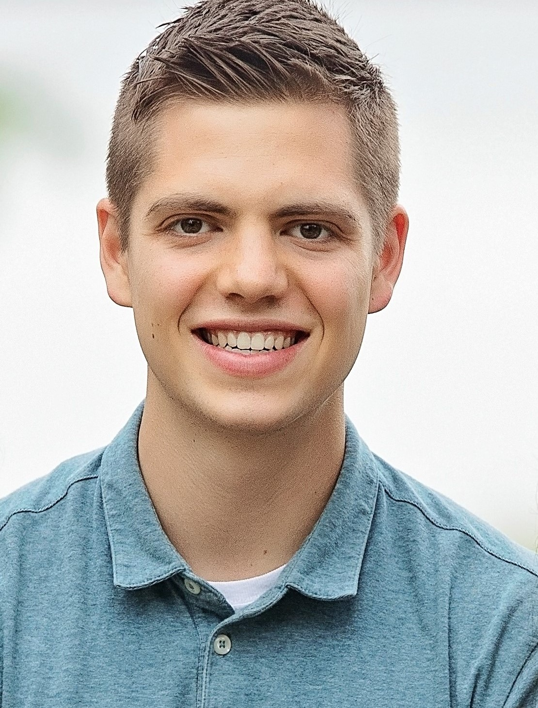

Welcome to my website, I'm Matt!
Born and raised in Gainesville, FL, I earned a bachelor's degree in Mechanical Engineering at Virginia Tech, and am currently working on my master's in Robotics at Northeastern University in Boston, MA.
My primary areas of interest in robotics are sensing and navigation, and I have experience using ROS and Kalman filtering to perform mobile robot localization. I'm also skilled in system integration, and have specialized as a Systems Integration Engineer at L3Harris for a couple of years. I am working on expanding my focus areas from pure mechanical and electrical to include more software and theory proficiencies.
My non-technical hobbies include playing basketball, ukulele, and Virtual Reality games. I'm an avid reader and listener of audiobooks of topics ranging from science/technology, self-improvement, neuroscience, and science-fiction. Lastly, I'm passionate about helping people to learn and to enjoy learning and am actively searching for novel platforms to make education more accessible and enjoyable.
If you'd like to contact me, I can be best reached by email.
And here are some other useful links: